用频率视角统一特征融合的两大缺陷——对类内不一致做低通减法，对边界位移做高通加法
把「类内不一致」与「边界位移」从经验观察升级为可量化的指标（IntraSim、SimMargin、SimAcc），设计前定位问题、设计后验证收益，形成完整闭环
类内不一致 = 无效高频过剩 → ALPF 做减法；边界位移 = 有效高频缺失 → AHPF 做加法，一低一高互补
沿局部相似度方向重采样，用一致特征替换不一致特征，兼顾大面积不一致区域与细窄边界
在语义分割、目标检测、实例分割、全景分割上全面超越 CARAFE、FADE、SAPA 与 DySample 等先前最优方法
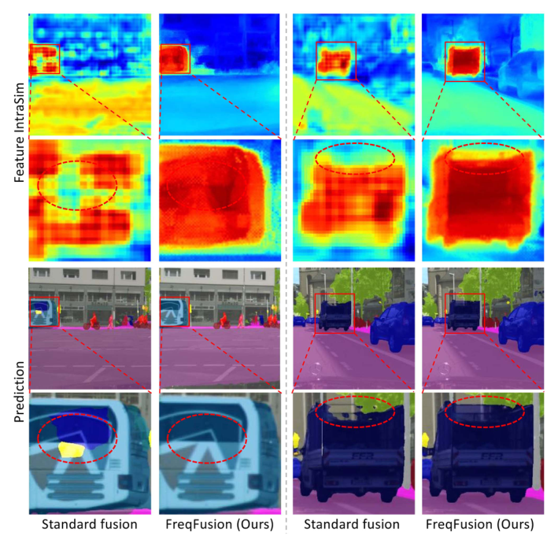
IntraSim(Y) = CosSim(Y, 类别中心)
特征向量与其类别中心的余弦相似度 · 类间相似度 InterSim 同理（中心换成另一类）
SimMargin(Y) = IntraSim(Y) − InterSim(Y)
另按最近类别中心归类统计出相似度精度 SimAcc
直观上：类内相似度低 → 物体内部特征涣散；裕度小 → 特征靠近类别边界、容易错分。三个指标共同构成衡量特征判别力的标尺，贯穿全文的设计与验证
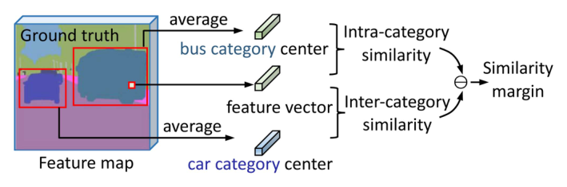
Yl = FUP(Yl+1) + Xl
FUP：2× 最近邻 / 双线性插值
Yli,j = Ỹl+1i+u,j+v + X̃li,j
Ỹl+1 = FUP(FLP(Yl+1)) 低通平滑后上采样 · X̃l = FHP(Xl) + Xl 高通残差增强 · (u,v) 为偏移
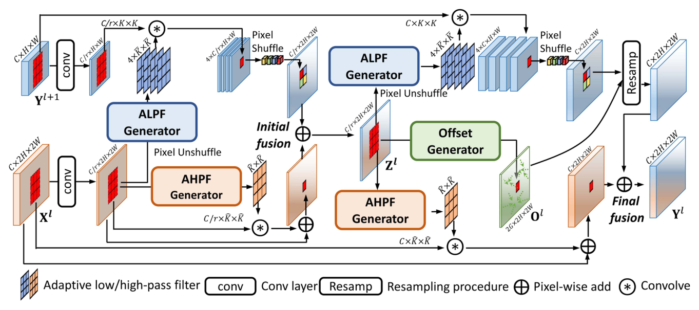
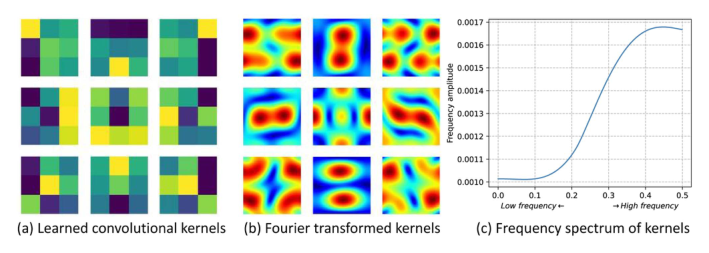
W̄l,p,qi,j = Softmax(Conv3×3(Zl))
kernel-wise softmax 约束每个位置的滤波器权重全正且和为 1 → 天然是平滑的低通滤波器
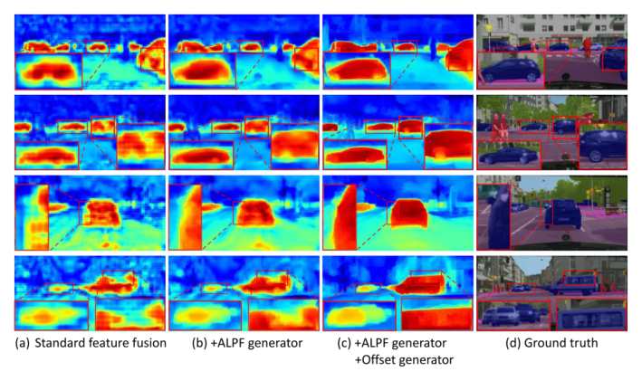
Ol = Dl · Al
Dl = Conv3×3(Concat(Zl, Sl)) 方向 · Al = Sigmoid(Conv3×3(Concat(Zl, Sl))) 幅度 · Sl：与 8 邻域像素的局部余弦相似度
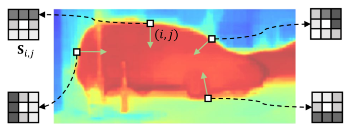
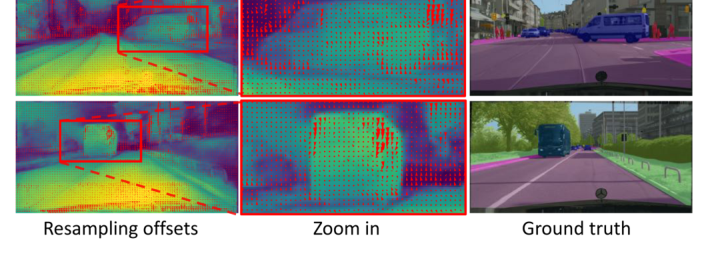
Ŵl,p,qi,j = E − Softmax(Conv3×3(Zl))
先用 softmax 造低通核，再用恒等核 E（中心 1、其余 0）反转 → 结果必为高通核；增强后残差并回：X̃li,j = Xli,j + Σ Ŵ · Xl
数值例子：softmax 输出低通核 [[0.1, 0.2, 0.1], [0.2, 0.2, 0.2], [0.1, 0.2, 0.1]]，用 E 减去它得 [[−0.1, −0.2, −0.1], [−0.2, 0.8, −0.2], [−0.1, −0.2, −0.1]]——9 个权重之和为 0，直流分量完全抵消，只保留邻域差分信号，正是高通特性
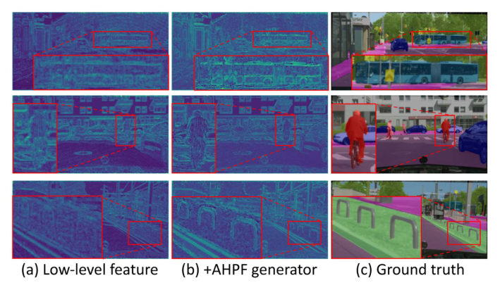
削弱物体内部无效高频
一致特征替换不一致特征
补回浅层边界高频细节
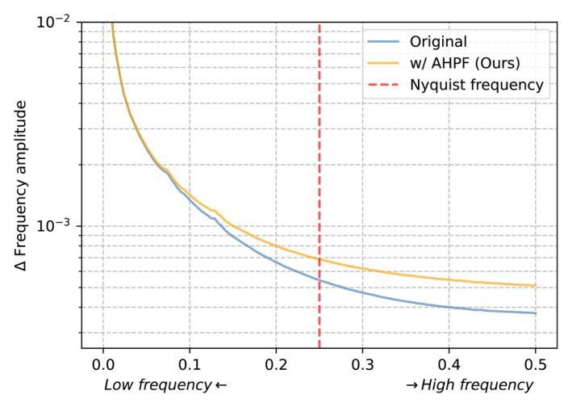
Cityscapes / ADE20K / COCO-Stuff，SegFormer、Mask2Former、SegNeXt，指标 mIoU 与 bIoU
MS COCO，Faster R-CNN（R50 / R101），指标 AP 系列，仅修改 FPN 特征融合环节
MS COCO，Mask R-CNN（R50 / R101），指标 box AP 与 mask AP
MS COCO，Panoptic FPN（R50），指标 PQ / SQ / RQ
对比上采样器：Deconv、Pixel Shuffle、CARAFE、IndexNet、A2U、FADE、SAPA-B、Dysample-S+ / +；消融以 SegNeXt-T 为基线在 ADE20K 上展开
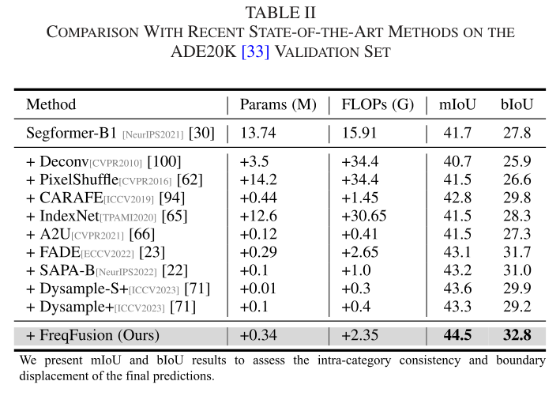
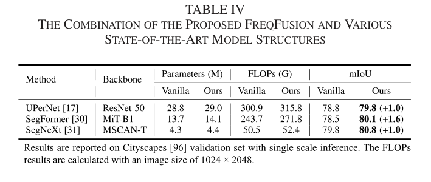
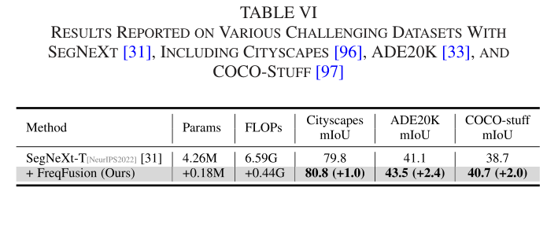
CNN（UPerNet）与 Transformer（SegFormer）结构差异巨大，FreqFusion 无需改动主结构即可无缝插入，泛化能力出色
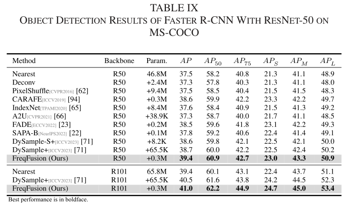
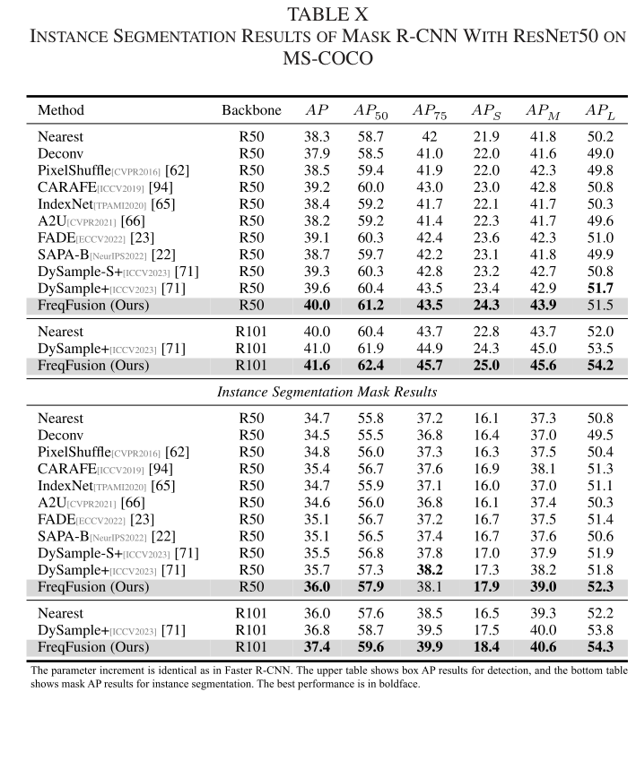
R50 + FreqFusion（39.4 AP）与更重的 R101 最近邻基线持平——融合质量的提升可以兑换骨干容量
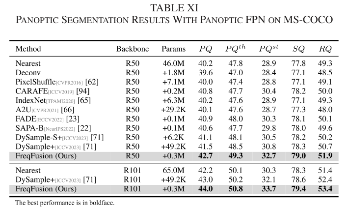
41.1 mIoU
42.0（+0.9）
42.9（+1.8）
43.5（+2.4）
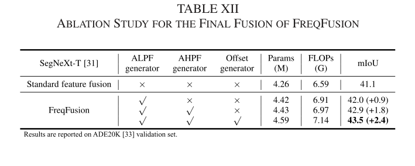
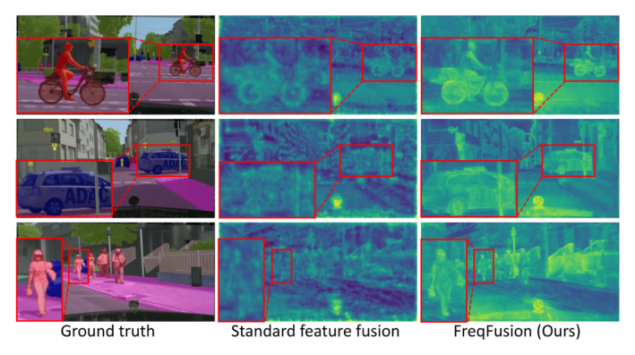
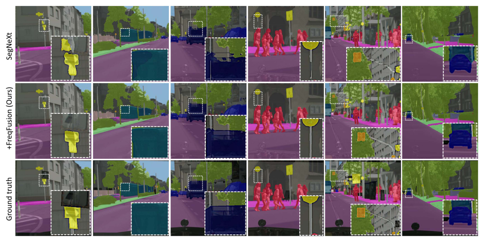
特征相似性分析（IntraSim、SimMargin、SimAcc）把两大缺陷升级为可量化问题——设计前定位问题、设计后验证收益，说服力强
无效高频过剩做 ALPF 减法、有效高频缺失做 AHPF 加法、偏移重采样居中协调——一低一高的互补设计十分巧妙
不改动主干，仅 +0.18M 参数即可在 CNN 与 Transformer 两类解码器、四大密集预测任务上一致涨点，实验丰富、可直接复用